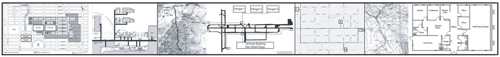
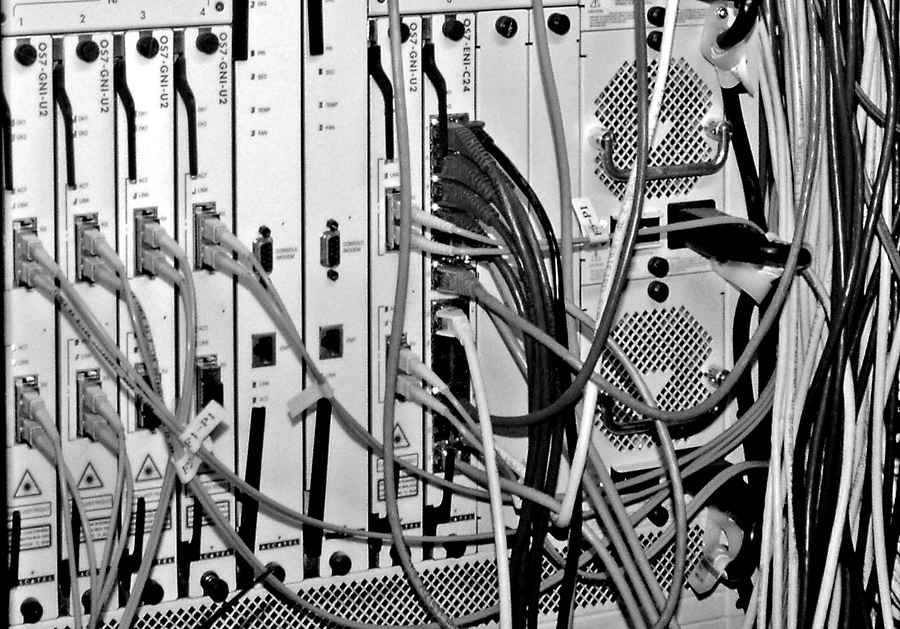
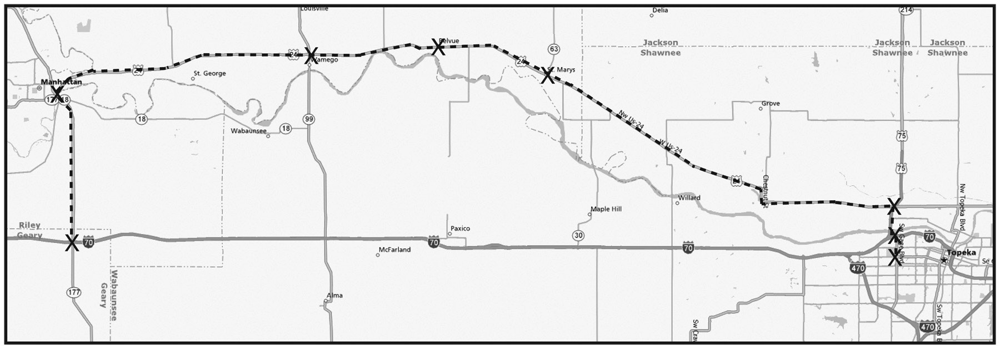
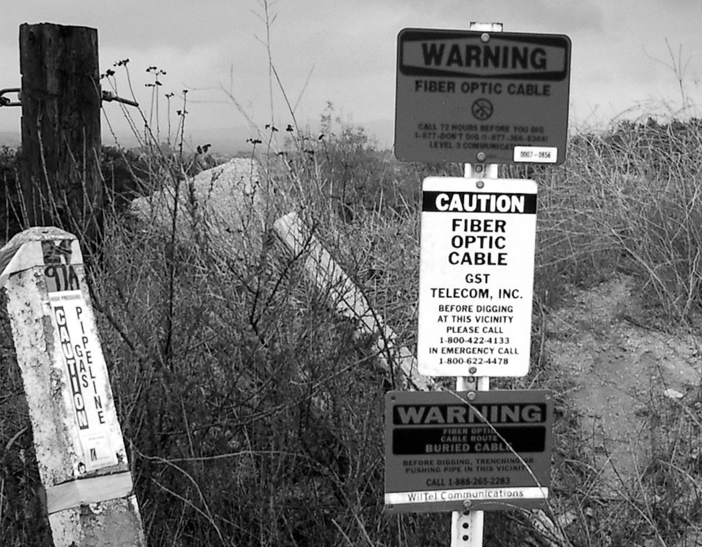
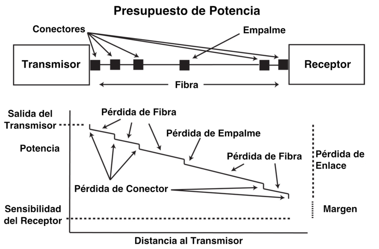
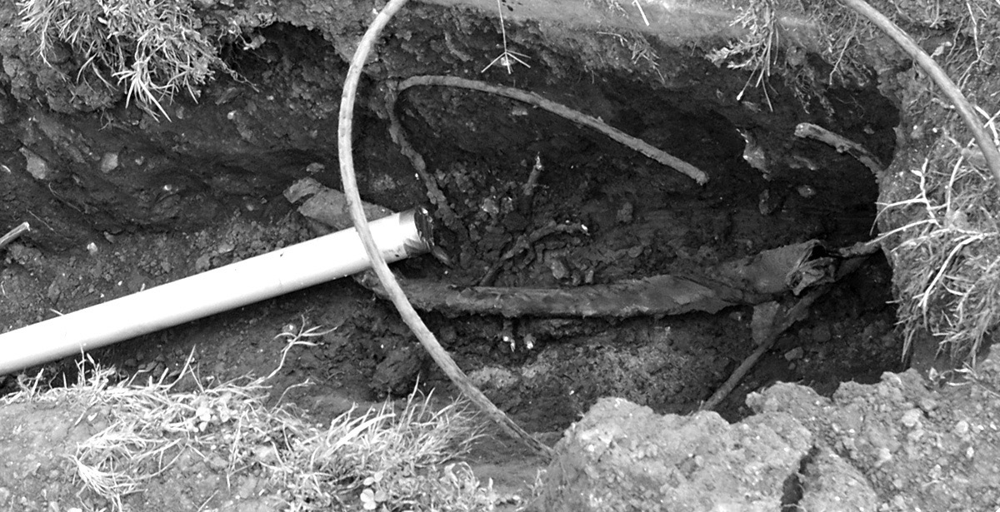

Libro FOA · Capítulo 08
Diseño de redes de fibra óptica
Planificación de rutas, selección de componentes, presupuestos de pérdida y gestión del proyecto.
En este capítulo
Qué aprenderás
- Qué implica el diseño de redes de fibra óptica
- Lo que debe saber un diseñador
- Cómo se desarrolla un proyecto desde la idea hasta la instalación
- Cómo elegir equipos y componentes para la red
- Cómo crear un presupuesto de pérdidas para el diseño
- Cómo planificar y completar una instalación

¿Qué Es El Diseño de Redes de Fibra Óptica?
El diseño de redes de fibra óptica se refiere a los procesos especializados que conducen a una instalación y funcionamiento satisfactorios de una red de fibra óptica. Incluye determinar el tipo de sistema(s) de comunicación que se transportará(n) por la red, el trazado geográfico (instalaciones, campus, planta exterior (OSP, etc.), el equipo de transmisión necesario y la red de fibra sobre la que funcionará. El diseño de una red de fibra óptica suele requerir también la interconexión con otras redes que pueden estar conectadas mediante cableado de cobre e inalámbrico. Lo siguiente que hay que tener en cuenta son los requisitos de permisos, servidumbres, autorizaciones e inspecciones. Una vez llegados a esta fase, podemos considerar la selección de componentes, la colocación, las prácticas de instalación, las pruebas, la resolución de problemas y la instalación y puesta en marcha del equipo de red. Por último, hay que considerar la documentación, el mantenimiento y la planificación del restablecimiento en caso de interrupción futura.
El diseño de la red debe preceder no sólo a la propia instalación, sino que debe completarse para estimar el coste del proyecto y, en el caso del contratista, licitar el trabajo. El diseño no sólo afecta a los aspectos técnicos de la instalación, sino también a los empresariales.
Trabajando Con Otros
Diseñar una red requiere trabajar con otro personal implicado en el proyecto, incluso más allá del cliente. Puede tratarse de ingenieros de redes que suelen pertenecer a departamentos de TI (tecnologías de la
información), arquitectos e ingenieros que supervisan un gran proyecto y contratistas que participan en la construcción de los proyectos. Otros grupos, como ingenieros o diseñadores, involucrados en aspectos del diseño del proyecto, como seguridad, CATV o diseñadores de sistemas industriales o diseñadores especializados en cableado de instalaciones, también pueden supervisar diversas partes de un proyecto que involucra el diseño e instalación de plantas y sistemas de cables de fibra óptica. Incluso la dirección no técnica de la empresa puede verse implicada cuando se desea exponer partes del sistema a los visitantes.
Cualificaciones Para Diseñadores de Redes de Fibra Óptica
Los diseñadores deben tener un profundo conocimiento de los componentes y sistemas de fibra óptica y de los procesos de instalación, así como de todas las normas, códigos y cualquier otra normativa local aplicable. También deben estar familiarizados con la mayoría de las tecnologías de telecomunicaciones (cableadas o inalámbricas), los estudios de emplazamientos, la política local, los códigos y las normas, y dónde encontrar expertos en esos campos cuando se necesite ayuda. Obviamente, el diseñador de redes de fibra óptica debe estar familiarizado con los sistemas de energía eléctrica, ya que el hardware electrónico debe suministrarse con alimentación ininterrumpida de alta calidad en cada ubicación. Y si trabajan para un contratista, la estimación será una cuestión muy importante, ¡ya que es ahí donde se pueden determinar los beneficios o las pérdidas!
Las personas que se dedican al diseño de proyectos de fibra óptica ya deben tener conocimientos de fibra óptica, como haber realizado formación técnica en fibra óptica, y pueden tener otra formación en las especialidades de diseño de plantas de cableado y/o contratación eléctrica. También es muy importante saber cómo encontrar información exhaustiva, sobre todo en Internet, acerca de productos, normas, códigos y, para las redes OSP, cómo utilizar servicios de cartografía en línea como Google Maps. Se valorará positivamente la experiencia con sistemas CAD.
Considere Primero el Sistema de Comunicaciones
Antes de empezar a diseñar una planta de cableado de fibra óptica, hay que establecer con el usuario final o el propietario de la red dónde se construirá la red y qué señales de comunicaciones transportará. La mayoría de los contratistas están familiarizados con las redes en predios, en las que las redes informáticas (LAN o redes de área local) y los sistemas de seguridad utilizan sistemas de cableado estructurado construidos en torno a normas industriales bien definidas. Una vez que el cableado sale de un edificio, incluso para enlaces cortos, por ejemplo en una red de campus o metropolitana, los requisitos de fibra y tipos de cable cambian. Los enlaces de larga distancia para telecomunicaciones, CATV o redes de servicios públicos tienen otros requisitos más estrictos, necesarios para soportar enlaces de alta velocidad más largos, que deben tenerse en cuenta.
Pero aunque el contratista suele considerar primero los requisitos del cableado, el verdadero diseño empieza con los requisitos del sistema de comunicaciones establecidos por el usuario final. Hay que fijarse primero en los tipos de equipos necesarios para los sistemas de comunicaciones, la velocidad de la red y las distancias a cubrir antes de considerar nada relacionado con la planta de cable. El equipo de comunicaciones determinará si la fibra es necesaria o preferible y qué tipo de fibra se necesita.
Redes Para Predios
Los sistemas de cable para predios están diseñados para transportar redes informáticas basadas en Ethernet, que actualmente pueden funcionar a velocidades de 10 megabits por segundo a 10 gigabits por segundo. Otros sistemas pueden transportar sistemas de seguridad con vídeo digital o analógico, alarmas perimetrales o sistemas de entrada, que suelen ser de baja velocidad, al menos en lo que respecta a la fibra. Los sistemas telefónicos en predios pueden transportarse por cables de par trenzado tradicionales o, como es cada vez más habitual, utilizar cableado LAN con tecnología de voz sobre IP (VoIP).
Las redes en predios suelen ser cortas, a menudo inferiores a los 100 metros (unos 330 pies) utilizados como límite para los sistemas de cableado estructurado estandarizados que permiten el cableado de par trenzado de cobre o fibra óptica, con redes troncales en campus utilizados en complejos industriales o instituciones de hasta 500 m o más, que requieren fibra óptica.
Las redes en predios suelen funcionar con fibra multimodo. Los sistemas multimodo son más baratos que los monomodo, no porque la fibra sea más barata (no lo es) ni porque el cable sea más barato (lo mismo), sino porque el gran núcleo de la fibra multimodo permite utilizar fuentes LED o VCSEL más baratas en los transmisores, lo que abarata mucho la electrónica. Los diseñadores y usuarios finales astutos suelen incluir tanto fibras multimodo como monomodo en sus cables troncales (denominados cables híbridos), ya que las fibras monomodo son muy baratas y proporcionan una capacidad prácticamente ilimitada para ampliar los sistemas.
Redes de Planta Externa
Las redes telefónicas son principalmente sistemas de planta externa (OSP), que conectan edificios a distancias tan cortas como unos cientos de metros hasta cientos o miles de kilómetros. Las velocidades de transmisión de datos en telecomunicaciones suelen ser de 2.5 a 10 gigabits por segundo, utilizando láseres de muy alta potencia que operan exclusivamente a través de fibras monomodo. El gran impulso de las telecomunicaciones es ahora llevar la fibra directamente a un edificio comercial o al hogar, ya que las señales son ahora demasiado rápidas para los tradicionales pares de cobre trenzado.
La televisión por cable también utiliza fibras monomodo en sistemas híbridos de fibra y coaxial (HFC) o digitales, en los que la red troncal es de fibra y la conexión doméstica es coaxial. El coaxial sigue funcionando para la CATV, ya que tiene un gran ancho de banda. Algunos proveedores de CATV han debatido la idea o incluso han probado la fibra hasta el hogar, pero todavía no han visto que la economía sea atractiva.
Además de las telecomunicaciones y la CATV, existen muchas otras aplicaciones OSP de la fibra. Las empresas de servicios públicos utilizan la fibra óptica tanto para las comunicaciones como para gestionar su red eléctrica. Las autopistas inteligentes están salpicadas de cámaras de seguridad y señales conectadas por fibra. Los sistemas de control de seguridad de grandes edificios, como aeropuertos, edificios gubernamentales y comerciales, casinos, etc., suelen estar conectados por fibra debido a las largas distancias que hay que recorrer. Al igual que otras redes, las aplicaciones para predios suelen ser multimodo, mientras que las OSP son monomodo para soportar enlaces más largos.
Las redes metropolitanas propiedad de las ciudades y gestionadas por ellas pueden transportar una gran variedad de tráfico, como cámaras de vigilancia, servicios de emergencia, sistemas educativos, telefonía, LAN, seguridad, supervisión y control del tráfico y, a veces, incluso tráfico para intereses comerciales utilizando ancho de banda alquilado en fibras oscuras o fibras propiedad de la ciudad. Sin embargo, como la mayoría están diseñadas para soportar enlaces más largos que las aplicaciones en predios o de campus, la fibra elegida es la monomodo.
Para todas las aplicaciones, excepto las de predios, la fibra es el medio de comunicación preferido, ya que sus mayores capacidades de distancia y ancho de banda la convierten en la única opción o en considerablemente más barata que el cobre o la tecnología inalámbrica. Sólo en el interior de los edificios hay que elegir, y esa elección la afectan los factores económicos, la arquitectura de la red y la tradición de utilizar cobre en el interior de los edificios. A continuación examinaremos con más detalle las opciones fibra/cobre/inalámbrico.
¿Cobre, Fibra o Inalámbrico?
Aunque el debate sobre qué es mejor -cobre, fibra o inalámbrico- ha animado las discusiones sobre cableado durante décadas, cada vez es más discutible.
La tecnología de las comunicaciones y el mercado del usuario final, al parecer, ya han tomado decisiones que generalmente dictan los medios y muchas redes combinan los tres. El diseñador de redes de cableado, especialmente de fibra óptica, y sus clientes tienen hoy en día una tarea
bastante fácil a la hora de decidir qué medios utilizar una vez elegidos los sistemas de comunicaciones.
Larga Distancia y Planta Exterior
Aparte de los sistemas de telecomunicaciones que aún utilizan cobre para la conexión final con el hogar, prácticamente todos los cables del sistema telefónico son de fibra óptica. Las compañías de CATV utilizan un coaxial de alto rendimiento en el hogar, pero se conecta a una red troncal de fibra óptica. Toda la red troncal de Internet está hecha con fibra. La mayoría de los edificios comerciales de las zonas pobladas tienen conexiones directas de fibra a proveedores de comunicaciones. Las ciudades utilizan la fibra SM para conectar edificios municipales, cámaras de vigilancia, señales de tráfico y, en ocasiones, ofrecen conexiones comerciales y residenciales, todo ello a través de fibra monomodo. Incluso las torres de antenas de telefonía móvil situadas a lo largo de las autopistas y en edificios altos suelen tener conexiones de fibra.
Zonas remotas como África central dependen de las comunicaciones por satélite, ya que los cables son demasiado caros para recorrer largas distancias para las pequeñas cantidades de tráfico que implican.
El diseño de aplicaciones de larga distancia o de planta exterior suele implicar la elección de un cableado que contenga fibra monomodo (SM) en lugar de cualquier otro medio. La mayoría de estos sistemas están diseñados para utilizarse en distancias y velocidades que sólo permiten el uso de fibra SM. Ocasionalmente, otras opciones pueden ser más rentables; por ejemplo, si una empresa tiene dos edificios en lados opuestos de una autopista, puede ser más fácil utilizar una red inalámbrica de línea de visión directa o radio óptica, ya que tienen un menor coste de instalación y es más fácil obtener los permisos pertinentes.
Cableado en Predios
El cableado de las instalaciones es donde se centran los argumentos fibra/cobre/inalámbrico. Un siglo y medio de experiencia con el cableado de cobre para comunicaciones hace que la mayoría de los usuarios estén familiarizados con él, lo que les hace ser escépticos ante cualquier otro medio. Y en muchos casos, el cobre ha demostrado ser una opción válida. La mayoría de los sistemas de gestión de edificios utilizan cableado de cobre propietario, por ejemplo el cableado de los termostatos y los sistemas de megafonía/altavoces. Los sistemas de entrada y control de seguridad, sobre todo los más baratos, siguen dependiendo del cable coaxial de cobre, aunque las instalaciones de alta seguridad como las gubernamentales y militares suelen pagar el coste adicional por la naturaleza más segura de la fibra.
Los sistemas de vigilancia son cada vez más frecuentes en edificios, sobre todo gubernamentales, bancarios o de otro tipo que se consideran posibles riesgos para la seguridad. Aunque las conexiones coaxiales son habituales en enlaces cortos y los defensores del cableado estructurado afirman que se pueden instalar cámaras a distancias limitadas en UTP Cat 5E o Cat 6 como las redes informáticas, la fibra se ha convertido en una opción mucho más habitual. Además de ofrecer una mayor flexibilidad en la colocación de las cámaras por su capacidad de distancia, el cableado de fibra óptica es mucho más pequeño y ligero, lo que permite una instalación más sencilla, especialmente en instalaciones antiguas como aeropuertos o grandes edificios que pueden tener espacios disponibles ya ocupados por muchas generaciones de cableado de cobre.
El cableado LAN se percibe a menudo como el gran campo de batalla de la fibra frente al cobre, pero esa batalla ha terminado para muchos usuarios. El usuario de la red, antes sentado en frente de una pantalla de ordenador de escritorio con cables que conectan su ordenador a la red corporativa y un teléfono conectado con otro cable, se está convirtiendo en una reliquia del pasado. Ahora la gente quiere ser móvil. Prácticamente todo el mundo utiliza un portátil, salvo los ingenieros o los diseñadores gráficos en sus puestos de trabajo, y la mayoría de ellos tendrán un portátil como segundo ordenador para llevar, junto con todos los demás, a las reuniones donde todo el mundo lleva su portátil y se conecta por WiFi. ¿Cuándo fue la última vez que fuiste a una reunión en la que podías conectarte con un cable?
Además de los portátiles con WiFi, la gente utiliza Blackberries e iPhones para comunicaciones inalámbricas. Algunos dispositivos nuevos, como el iPhone, permiten navegar por Internet con conexión a través de la red celular o de una red WiFi. Algunos teléfonos móviles son dispositivos VoIP portátiles que se conectan a través de WiFi para hacer llamadas telefónicas. Aunque el WiFi ha tenido algunos problemas de crecimiento y actualizaciones continuas, con el estándar 802.11n se ha vuelto más fiable y ofrece lo que parece ser un ancho de banda adecuado para la mayoría de los usuarios.
El deseo de movilidad, junto con la expansión de los servicios conectados, parece estar conduciendo a un nuevo tipo de red corporativa. La red troncal de fibra óptica con conexión de cobre hasta el escritorio, donde la gente quiere conexiones directas, y múltiples puntos de acceso inalámbricos, más de los habituales en el pasado, para una cobertura total y mantener un número razonable de usuarios por punto de acceso es la nueva norma para las redes corporativas.
¿Y la fibra hasta el escritorio? Los usuarios avanzados pueden optar por la FTTD, ya que una red de fibra completa puede ser una solución muy rentable, que elimina la necesidad de disponer de salas de telecomunicaciones llenas de conmutadores, con alimentación y tierra de calidad para los datos, además de aire acondicionado todo el año. Los usuarios avanzados, como ingenieros, diseñadores gráficos y animadores, pueden utilizar el ancho de banda disponible con FTTD. Otros optan por un sistema de zonas, con fibra a conmutadores locales de pequeña escala, lo suficientemente cerca de los usuarios como para que los que quieran conectividad por cable en lugar de inalámbrica puedan conectarse con un cable de conexión corto.
El trabajo del diseñador consiste en comprender no sólo la tecnología del cableado de comunicaciones, sino también la tecnología de las comunicaciones, y mantenerse al día de los últimos avances no sólo en la tecnología, sino también en las aplicaciones de ambas.
Uso de Normativas y Estándares de Cableado
Muchos documentos relacionados con el diseño de plantas de cableado se centran en las normas industriales tanto para los sistemas de comunicaciones como para las plantas de cableado. Es importante saber por qué y quién redacta estas normas. Estas normas están escritas por fabricantes de productos para fabricantes, no para usuarios o instaladores. Como dijo una vez un miembro de uno de los comités de normalización, las normas son "especificaciones mutuamente acordadas para el desarrollo de productos". Garantizan que los productos de los distintos fabricantes funcionen juntos correctamente. El principal objetivo de las normas no es educar a los instaladores ni a los usuarios finales: ese es el trabajo de los fabricantes de productos que cumplen las normas.
¿Dónde puede informarse sobre los estándares pertinentes? Comprar los caros documentos de las normas no suele ser la mejor manera de conocerlas. Los fabricantes que redactaron las normas y construyen los productos que las cumplen proporcionan los materiales para educarle a usted y a sus clientes. Prácticamente todos los fabricantes de cableado tienen una sección en la parte posterior de su catálogo o en su sitio web que explica las normas pertinentes. Le indican cómo deben ser los sistemas, qué componentes se utilizan para construirlos y cómo deben probarse. No hay mejor lugar que el catálogo de un proveedor o un archivo descargado de un sitio web para aprender lo que hay que saber sobre las normas.
Elección de Equipo de Transmisión
La elección del equipo de transmisión es el siguiente paso en el diseño de una red de fibra óptica. Este paso suele ser una empresa de cooperación en la que participan el cliente, que sabe qué tipo de datos necesita comunicar, el diseñador y el instalador, y los fabricantes de equipos de transmisión.
Los equipos de transmisión y la planta de cable están estrechamente interrelacionados. La distancia y el ancho de banda ayudarán a determinar el tipo de fibra necesario y eso dictará las interfaces ópticas de la planta de cableado. La facilidad de elección de equipo puede depender del tipo de equipo de comunicaciones que se necesite. Las telecomunicaciones llevan 30 años estandarizando la fibra óptica, por lo que tienen mucha experiencia en la construcción e instalación de equipos. Dado que la mayoría de los equipos de telecomunicaciones utilizan las convenciones del sector, normalmente puedes encontrar equipos para transmisión de telecomunicaciones que estarán disponibles para enlaces cortos (normalmente redes metropolitanas, quizá de hasta 20-30 km), larga distancia y, a continuación, distancias realmente larga, como tendidos submarinos. Todos funcionan con fibra monomodo, pero pueden especificar distintos tipos de monomodo.

Los enlaces de telecomunicaciones más cortos utilizarán láseres de 1310 nm en fibra monomodo normal, a menudo denominada fibra G.652, su norma internacional. Los enlaces más largos utilizarán una fibra con dispersión cambiada optimizada para funcionar con láseres de 1550 nm (fibra G.652). Para la mayoría de las aplicaciones, se utilizará una de ellas. La mayoría de las empresas de telecomunicaciones ofrecen ambas opciones.
La mayoría de los enlaces de CATV son sistemas AM (analógicos) basados en láseres lineales especiales llamados láseres de realimentación distribuida (DFB) que utilizan 1310 nm o 1550 nm y funcionan en fibras monomodo normales. Cuando la televisión por cable pase a la transmisión digital, utilizará una tecnología más parecida a la de las telecomunicaciones, que ya es totalmente digital.
Las opciones se vuelven más complejas cuando se trata de datos y CCTV porque las aplicaciones son muy variadas y puede que no existan normas. Además, es posible que los equipos no dispongan de opciones de transmisión por fibra óptica, lo que obliga a convertir los puertos de cobre a fibra mediante unos dispositivos denominados convertidores de medios.
En las redes informáticas, los estándares Ethernet, creados por el comité IEEE 802.3, están totalmente estandarizados. Puedes leer los estándares y ver hasta dónde puede transmitir cada opción de equipo a través de distintos tipos de fibra, eligiendo la que mejor se adapte a tus necesidades. La mayoría del hardware de red, como conmutadores o enrutadores, está disponible con interfaces de fibra óptica opcionales, pero los PC suelen venir sólo con interfaces de cobre UTP que requieren convertidores de medios. Una búsqueda en Internet de "convertidores de fibra óptica" le proporcionará docenas de fuentes de estos económicos dispositivos. Los convertidores de medios también permiten elegir el medio adecuado para la aplicación del cliente, permitiendo su uso con fibra multimodo o monomodo e incluso puede ofrecer opciones de transceptor para la distancia que debe cubrir el enlace.
La videovigilancia es una aplicación similar. Cada vez hay más cámaras con interfaces de fibra, ya que muchos sistemas de CCTV se encuentran en lugares como grandes edificios o aeropuertos, o zonas donde las distancias superan la capacidad de transmisión coaxial. Si no, los convertidores de medios de vídeo, normalmente disponibles en los mismos proveedores que los convertidores de medios Ethernet, son fáciles de conseguir y también baratos.
Una vez más, hay que elegir convertidores que cumplan los requisitos de enlace establecidos por la aplicación del cliente, que en el caso del vídeo no sólo incluye la distancia, sino también las funciones, ya que algunos enlaces de vídeo llevan señales de control a la cámara para el movimiento horizontal, zoom e inclinación de la cámara, además de vídeo de vuelta a una ubicación central.
¿Y los enlaces de datos industriales? Muchas fábricas utilizan fibra óptica por su inmunidad a las interferencias electromagnéticas. Pero los enlaces industriales pueden utilizar medios propios para enviar datos convertidos a partir de antiguos estándares de cobre como RS- 232, la antigua interfaz serie disponible antaño en todos los PC, SCADA popular en la industria de servicios públicos, o incluso simples cierres de relé. Muchas empresas que construyen estos enlaces de control ofrecen ellas mismas interfaces de fibra óptica en respuesta a petición de los clientes. Algunos de estos enlaces están disponibles desde hace décadas, ya que las aplicaciones industriales fueron algunos de los primeros usos locales de la fibra óptica, que se remontan a antes de 1980.
Cualquiera que sea la aplicación, es importante que el usuario final y el contratista de cableado hablen de la aplicación real con el fabricante del hardware de transmisión para asegurarse de obtener el equipo adecuado. Si bien las aplicaciones de telecomunicaciones y CATV están claramente definidas y las aplicaciones de datos (Ethernet) están reguladas por normas, nuestra experiencia nos dice que no todos los fabricantes especifican sus productos exactamente de la misma manera.
Una empresa del mercado industrial ofrecía unos quince productos diferentes de fibra óptica, principalmente convertidores de medios para sus equipos de control. Sin embargo, esos quince productos habían sido diseñados por al menos una docena de ingenieros diferentes, no todos ellos familiarizados con la fibra óptica y, especialmente, con la jerga y las especificaciones de la fibra. Como resultado, no se podían comparar los productos para hacer una elección o diseñarlos en una red basándose en las especificaciones. Hasta que sus ingenieros de diseño, ventas y aplicaciones recibieron formación en fibra óptica y crearon directrices para la aplicación de los productos, sufrieron continuos problemas de aplicación por parte de los clientes.
La única forma de asegurarse de elegir el equipo de transmisión adecuado es asegurarse de que el cliente y el proveedor del equipo -y usted mismo- se comunican claramente lo que piensan hacer.
Planificación de la Ruta
Una vez decidida la utilización de fibra óptica y elegido el equipo adecuado para la aplicación, es el momento de determinar exactamente dónde se instalarán los cables y se ubicará el hardware. Hay que recordar que cada instalación es única. La ubicación real de la planta de cable vendrá determinada por los emplazamientos físicos a lo largo de la ruta, los códigos o leyes de construcción locales y otras personas implicadas en los diseños. Como es habitual, las instalaciones en predios y plantas exteriores son diferentes, por lo que las consideraremos por separado.
Las instalaciones en predios y campus pueden ser más sencillas, ya que la superficie física implicada es menor y las opciones, menores. Empieza con un buen juego de planos arquitectónicos y, si es posible, ponte en contacto con el arquitecto, el contratista y/o el administrador del edificio. Tener acceso a ellos significa tener a alguien a quien pedir información y consejo. Ojalá los planos estén disponibles en formato CAD para que puedas tener una copia para hacer el diseño del cableado de red en tu ordenador, lo que facilita mucho los ajustes y la documentación del diseño.
Si el edificio está aún en fase de diseño, es posible que tenga la oportunidad de hacer aportaciones sobre las necesidades de la planta de cables. Lo ideal sería que usted pudiera influir en la ubicación de las salas de equipos, el trazado de las bandejas de cables y conductos, la disponibilidad de una alimentación eléctrica acondicionada adecuada y de tomas de datos independientes, una climatización suficiente y otras necesidades de la red. En el caso de los edificios preexistentes, los planos arquitectónicos detallados le permitirán dirigir el cableado y los equipos de red sorteando los obstáculos que invariablemente se interponen en su camino.
Las instalaciones de cableado de planta externa (OSP) presentan una enorme variedad en función de la ruta que deba seguir el cable. El trazado puede atravesar grandes extensiones de campo abierto, discurrir por carreteras rurales o urbanas asfaltadas, cruzar caminos, barrancos, ríos o lagos, o, lo que es más probable, alguna combinación de todos ellos. Puede requerir cables enterrados, cables aéreos o cables submarinos. El cable puede estar en un conducto, en un conducto interno o directamente enterrado; los cables aéreos pueden ser autosoportados o estar amarrados a un mensajero. Los tendidos más largos suelen incluir el cruce de agua, por lo que el cable puede estar bajo el agua o amarrado a un puente con otros cables.
Sistemas de Información Geográfica (GIS por siglas en inglés [geographic Information System])
Las instalaciones de plantas exteriores dependen en gran medida de los mapas y datos sobre el trazado de la planta de cable. Esto puede incluir datos básicos sobre la geología local, la ubicación de carreteras, edificios, servicios públicos subterráneos y aéreos, y mucho más. GIS (siglas en inglés para Sistemas de Información Geográfica) se utilizan generalmente para crear mapas muy detallados de las rutas de las plantas de cable OSP durante la fase de diseño. Está fuera del alcance de este libro examinar los GIS en detalle, pero el diseñador debe aprender a utilizar un SIG para crear el diseño para facilitar no sólo el diseño de la planta de cable, sino también crear documentación para la red.
Es importante comprender las limitaciones del GIS. Por ejemplo, el tipo de suelo a lo largo de la ruta puede determinar los métodos de instalación subterránea, con suelos profundos permitiendo el enterrado directo, otros requiriendo zanjas y conductos y zonas rocosas que impiden cualquier tipo de instalación subterránea. Las instalaciones aéreas deben basarse en el conocimiento de los propietarios de los postes y los procesos necesarios para obtener el permiso para utilizar los postes y adecuación para las nuevas instalaciones de cables.
No utilice el GIS por sí solo. Es sólo una herramienta que puede ayudar al diseñador, pero no sustituye a los procesos tradicionales, incluidas las visitas sobre el terreno para evaluar la ruta.
Visitas en Campo
Y lo antes posible, hay que visitar el emplazamiento o la ruta donde se instalará la red. Hay que recorrer en coche o a pie cada metro del trazado para determinar las mejores opciones de colocación de los cables, los obstáculos que hay que evitar o superar, y determinar qué entidades locales pueden opinar sobre el trazado. A menudo, las ciudades u otros gobiernos conocerán los conductos disponibles o las normas sobre el uso de postes de servicios públicos que pueden ahorrar tiempo y esfuerzo de diseño.
En el caso de las instalaciones dentro de edificios existentes, debes inspeccionar todas las zonas para estar absolutamente seguro de cómo es el edificio en realidad y, a continuación, modificar los planos para que reflejen la realidad, especialmente todos los obstáculos que impidan pasar el cableado y los equipos, así como las paredes que requieran cortafuegos y que no figuren en los planos actuales. Si puede, haga fotos. En el caso de edificios en construcción, una visita a las obras sigue siendo una buena idea para hacerse una idea de cómo será la estructura final y conocer a los jefes de obra con los que se va a trabajar. Ellos pueden ser la mejor fuente de información sobre quiénes son las autoridades locales que inspeccionarán tu trabajo y qué esperan.
Con todas esas opciones en instalaciones OSP, ¿por dónde empezar? Con un buen mapa. No sólo un mapa de carreteras o un mapa topográfico, sino imágenes por satélite superpuestas a las carreteras es mucho mejor, como las que puede proporcionar "Google Maps". Crear un mapa de la ruta es el primer paso, anotando en él otros servicios públicos a lo largo de la ruta y consultando con grupos que documenten los servicios públicos actuales para evitar que los contratistas dañen tuberías y cables existentes.
Una vez marcados los planos, empieza la verdadera "diversión": averiguar de quién es el permiso que necesitas para tender el cableado. Las instalaciones OSP están sujetas a la aprobación de las autoridades locales, estatales y federales, que influirán mucho en el diseño de tu proyecto. Algunas ciudades, por ejemplo, prohíben los cables aéreos. Otras ya han enterrado conductos que puedes utilizar para rutas específicas. Dado que muchos municipios han instalado redes de fibra de propiedad municipal, es posible que dispongan de fibra que puedas alquilar, en lugar de tener que pasar por el engorro de instalar la tuya propia.

A menos que trabaje para una empresa de servicios públicos que ya tenga los contactos y, con suerte, las servidumbres necesarias, tendrá que conocer a toda una serie de personas que controlarán sus actividades. Y hay que prever el tiempo necesario para obtener la aprobación de todos los implicados.
Cavar Una Vez
Los gobiernos y otras organizaciones que controlan los derechos de paso se enfrentan a un difícil problema en la era de Internet: la excavación continua de sus propiedades para la instalación de plantas de cable. No es raro que las carreteras tengan que ser excavadas varias veces por distintos propietarios y operadores de instalaciones de cable. Esto es caro y perjudicial. Una solución sencilla es lo que suele denominarse "Excavar una vez", un proceso en el que el instalador de la planta de cable que excava los derechos de paso instala conductos adicionales para futuras instalaciónes en la planta de cable.
Cuando se instala un cable con sus conductos o canalizaciones asociados, el instalador añade varios conductos adicionales para su uso futuro en la ruta. El número y el tipo de conductos se basan en los usos futuros previstos, pero es probable que sea de un mínimo de 2 a 5 metros. La necesidad de conductos adicionales se especifica en el contrato con el propietario de la planta de cableado y/o el instalador, y la autoridad local suele ser propietaria de los conductos instalados. Los futuros usuarios alquilan el espacio de conductos a la autoridad local e introducen sus propios cables.
Esta política de "cavar una vez" es especialmente útil en las áreas metropolitanas donde cavar es más perturbador y las ciudades que buscan convertirse en "ciudades inteligentes" encuentran que necesitan grandes redes troncales de fibra óptica para dar soporte a los servicios deseados.

Llame Antes de Excavar
Excavar con seguridad es de vital importancia. El riesgo no es sólo interrumpir las comunicaciones, sino también poner en peligro la vida de las personas que desentierran cables de alta tensión o líneas de gas. Algunos obstáculos pueden encontrarse durante las visitas a las obras, donde pueden verse señales como éstas. Hay varios servicios que mantienen bases de datos con la ubicación de los servicios subterráneos con los que hay que ponerse en contacto antes de excavar, pero la cartografía debe hacerse durante la fase de diseño y volver a comprobarse antes de excavar para asegurarse de disponer de los datos más recientes.
Si todo esto suena vago, lo es. Cada proyecto es diferente y requiere un análisis cuidadoso de las condiciones antes incluso de empezar a elegir los componentes de fibra óptica y planificar la instalación propiamente dicha. La experiencia es la mejor maestra.
Elección de Componentes
Elección de Componentes Para Instalaciones Exteriores
La elección de los componentes de fibra óptica de la planta exterior (OSP) comienza con el desarrollo de la ruta que seguirá la planta de cables. Una vez establecida la ruta, se sabe por dónde pasarán los cables, dónde se ubicarán los empalmes y dónde terminarán los cables. Todo ello determina las decisiones que hay que tomar sobre el tipo de cable, el hardware y, a veces, la metodología de instalación.
La mayoría de los proyectos empiezan con la elección de un cable. Los diseños de los cables se optimizan para el tipo de aplicación. En las instalaciones OSP, los cables pueden ser subterráneos, directamente enterrados, aéreos o submarinos (o simplemente subacuáticos).
Los cables subterráneos suelen instalarse en conductos de 10 cm (4 pulgadas) con varios conductos interiores para tirar de los cables. En este caso, los cables están diseñados para soportar una gran tensión de tracción y se utilizan lubricantes para reducir la fricción en los tirones más largos. Los cables están protegidos por equipos de tracción automatizados que limitan la tensión de tracción. Los tendidos muy largos o los que tienen más curvas en el conducto pueden necesitar tirones intermedios en los que se tira del cable, se le da forma de ocho y luego se tira de él.
Los empalmes de los cables subterráneos suelen almacenarse en la superficie, en un pedestal o en una cámara subterránea. Los empalmes en cables subterráneos suelen almacenarse sobre el suelo en un pedestal o en una cámara subterránea. Se necesita un exceso de cable suficiente para permitir el empalme en un entorno controlado, normalmente un remolque de empalme, y el almacenamiento del exceso de cable debe tenerse en cuenta en la fase de planificación.
El cable enterrado directamente se coloca bajo tierra sin conducto. En este caso, el cable debe estar diseñado para soportar los rigores de estar enterrado en la tierra, por lo que suele ser un cable más resistente, blindado para evitar daños por la mordedura de roedores o las presiones de la tierra y las rocas en las que se entierra. El enterramiento directo suele limitarse a zonas donde el suelo es mayoritariamente tierra con pocas rocas hasta la profundidad necesaria, por lo que es fácil abrir zanjas o arar el cable. Los empalmes de los cables enterrados directamente pueden almacenarse sobre el suelo en un pedestal o enterrarse bajo tierra. Se necesita un exceso de cable suficiente para permitir el empalme en un entorno controlado, normalmente un remolque de empalme, y hay que tener en cuenta el almacenamiento del cable sobrante.
La microzanja es otro método utilizado para la instalación subterránea, generalmente en carreteras o patios privados para las conexiones de fibra hasta el hogar.
La microzanja consiste en excavar una zanja estrecha y poco profunda de unos 25 mm (1 pulgada) de ancho y 200-250 mm (8-10 pulgadas) de profundidad con una herramienta especial. Existen herramientas que pueden atravesar calzadas o aceras de asfalto u hormigón, o cortar el suelo desnudo. Tras cortar la zanja, se puede instalar un cable especial o micro-conductos en los que los cables se pueden instalar por soplado. Una zanja típica puede alojar un microducto con hasta seis conductos, lo que permite futuras ampliaciones.
Las instalaciones aéreas van de poste a poste, pero el método de sujeción de los cables puede variar según la situación. Algunos cables se trincan a mensajeros u otros cables, como los de CATV, en los que los cables ligeros de fibra suelen debanarse sobre el pesado cable coaxial ya instalado. Los cables están disponibles en una configuración en "8" con un mensajero de acero unido que proporciona la fuerza para soportar la tensión en el cable. Algunos cables se fabrican para ser soportados directamente sin mensajero, denominados cables auto-soportados totalmente dieléctricos que utilizan herrajes especiales en los postes para sujetar los cables. El cable óptico de tierra es utilizado por las empresas de servicios públicos para líneas de distribución de alta tensión. Este tipo de cable es un cable eléctrico con fibras en el centro dentro por un tubo metálico herméticamente sellado. Se instala igual que los conductores eléctricos normales. Los empalmes en cables aéreos pueden apoyarse en los cables o colocarse en postes o torres, La mayoría de los empalmes se realizan en el suelo, aunque a veces se hace en un cubo o incluso en una carpa apoyada en el poste o la torre. Existen herrajes para enrollar y almacenar el cable sobrante.
A veces, las instalaciones OSP implican pasar cables por ríos o lagos donde no es posible utilizar otras rutas. Para ello hay cables especiales más resistentes y sellados. También existen empalmes submarinos. Los aterrizajes en la orilla deben planificarse para evitar daños, generalmente enterrando el cable cerca de la orilla y señalizando el aterrizaje. Los enlaces transoceánicos son similares pero mucho más complejos, y requieren buques especiales diseñados para el tendido de cables.
Como las aplicaciones OSP suelen utilizar longitudes considerables de cables, éstos pueden fabricarse por encargo, lo que permite optimizarlos para esa instalación concreta. Esto suele permitir ahorrar costes, pero requiere más conocimientos por parte del usuario y más tiempo para negociar con varios fabricantes de cables.
Para empezar a especificar el cable, hay que saber cuántas fibras de qué tipo se incluirán en cada cable. Es importante darse cuenta de que la fibra, especialmente la fibra monomodo utilizada en prácticamente todas las instalaciones OSP, es barata y la instalación es cara. La instalación de un cable OSP puede costar cien veces más que el propio cable. La elección de una fibra monomodo es fácil, con un monomodo básico de 1300 nm (llamado fibra G.652) adecuado para todos los enlaces excepto los más largos o los que utilizan multiplexación por división de longitud de onda.
Éstos pueden necesitar fibra especial optimizada a 1500-1600 nm (G.653 o G.654). Para las instalaciones de cableado para predios y de campus, la fibra multimodo 50/125 optimizada para láser de tipo OM3 es probablemente la mejor opción para cualquier tendido OSP multimodo, ya que su menor atenuación y mayor ancho de banda harán que la mayoría de las redes funcionen mejor.
Incluir más fibras en un cable no aumenta proporcionalmente su coste; el coste básico de fabricación de un cable es fijo, pero añadir fibras no aumentará mucho el coste. Elegir un diseño estándar también ayuda a reducir costes, ya que los fabricantes pueden tener el cable en stock o fabricarlo al mismo tiempo que otros de diseño similar. El único coste real de añadir más fibras son los costes adicionales de empalme y terminación, que siguen siendo pequeños con respecto al coste total instalado. Y recuerde que disponer de fibras adicionales para futuras para ampliación, sistemas de reserva o en caso de roturas que afecten a fibras individuales pueden ahorrar muchos quebraderos de cabeza en el futuro.
Entre las características comunes de todos los cables de planta exterior se incluyen la resistencia y la protección contra el agua o la humedad. La resistencia necesaria del cable dependerá del método de instalación (véase más adelante). Todos los cables instalados en el exterior deben tener una clasificación de resistencia a la humedad y al agua. Hasta hace poco, la mayoría de la gente elegía un cable relleno de gel, pero ahora los cables bloqueados por agua seca están ampliamente disponibles y son los preferidos por muchos usuarios. Estos cables utilizan cinta y/o polvo absorbentes de agua que se expanden y sellan el cable si entra agua en él. Los instaladores prefieren especialmente los cables secos, ya que no requieren limpiar el pegajoso y tedioso gel utilizado en muchos cables, lo que reduce en gran medida la preparación del cable para su empalme o terminación.
Los tipos de construcción de los cables OSP se diseñan específicamente en función de su resistencia, dependiendo de dónde se vayan a enterrar directamente, enterrar en conductos, colocar bajo el agua o tender aéreamente en postes. Debe elegirse el tipo adecuado para cada tramo de cable. Algunas aplicaciones pueden incluso utilizar varios tipos de cable.
Disponer de buenos planes de construcción ayudará a trabajar con los fabricantes de cables para encontrar los tipos de cable adecuados y pedir cantidades suficientes. Siempre hay que pedir más cable que longitudes de ruta, para tener en cuenta los bucles de servicio, la preparación para la terminación y el exceso a ahorrar para posibles necesidades de restauración en el futuro.
Al igual que los tipos de cables, los tipos de herrajes para instalaciones de cableado son muy diversos y deben elegirse en función de los tipos de cables utilizados. Con tantas opciones de herrajes, trabajar con los fabricantes de cables es la forma más rápida de elegir los herrajes y garantizar la compatibilidad. Además de la compatibilidad de los cables, los herrajes deben ser adecuados para el lugar de instalación, que puede ser afuera en la interperie, colgados en postes, enterrados, bajo el agua, dentro de pedestales, bóvedas o edificios, etc. A veces, el hardware debe ser compatible con la zonificación local, por ejemplo en subdivisiones o parques empresariales. La elección de este hardware puede llevar mucho tiempo, pero es muy importante para la fiabilidad a largo plazo de la planta de cableado.
El empalme y la terminación son la última categoría de componentes que hay que elegir. La mayor parte de la fibra monomodo OSP se empalma por fusión para obtener bajas pérdidas, baja reflectancia y fiabilidad. La fibra multimodo, especialmente la OM3, también se empalma fácilmente por fusión, pero si sólo se necesitan unos pocos empalmes, el empalme mecánico proporcionará el rendimiento y la fiabilidad adecuados. Si la terminación se realiza directamente en cables OSP multimodo, se necesitarán kits de desacoplamiento para enfundar las fibras a fin de garantizar la fiabilidad cuando los conectores se acoplan directamente. Esto requiere más tiempo de instalación que empalmar latiguillos pre-terminados en los cables, como es habitual con los cables de fibra monomodo, y puede no ahorrar ningún coste. Incluso se están comercializando sistemas completos pre-terminados de planta de cableado exterior, que reducen el tiempo necesario para la terminación y el empalme. Hable con los fabricantes de cables para determinar la viabilidad de esta opción.
Elegir los componentes adecuados para las instalaciones OSP puede llevar tiempo, pero es importante para el funcionamiento del sistema. Una vez elegidos los componentes, las listas de materiales se añaden a la documentación para su compra, instalación y futura consulta.
Elección De Componentes Para Instalaciones en Predios
La elección de los componentes de fibra óptica de las instalaciones se ve afectada por varios factores, como la elección del equipo de comunicaciones, el enrutamiento físico de la planta de cableado y los códigos y normativas de construcción. Si se trata de una red corporativa (LAN), el diseño incluirá probablemente una red troncal de fibra óptica que conecte las salas de ordenadores a los armarios de cableado. Los armarios de cableado albergan conmutadores que convierten la red troncal de fibra en cobre UTP para los ordenadores de escritorio conectados por cable y en cobre o fibra para los puntos de acceso inalámbricos.
Algunos ordenadores de escritorio, especialmente en departamentos de ingeniería o diseño, pueden requerir fibra hasta el ordenador de escritorio por su mayor ancho de banda. También pueden necesitarse cables o fibras adicionales para los sistemas de seguridad (alarmas, sistemas de acceso o cámaras de CCTV) y los sistemas de gestión de edificios.
El diseño de la planta de cableado de fibra óptica requiere coordinarse con todas las personas que intervienen de algún modo en la red, incluido el personal informático, la dirección de la empresa, los arquitectos e ingenieros, etc., para garantizar que todos los requisitos de cableado se tengan en cuenta a la vez, a fin de poder compartir recursos.
Al igual que en el diseño de OSP, primero hay que considerar la elección de la fibra. La mayoría de las redes en predios utilizan fibra multimodo, pero muchos usuarios instalan ahora cables híbridos con fibras monomodo para futuras ampliaciones. La fibra de 62.5/125 micrones (fibra OM1) que se ha utilizado durante casi dos décadas ha sido sustituida en su mayor parte por la nueva fibra 50/125 optimizada para láser (OM3), ya que ofrece ventajas sustanciales en ancho de banda/distancia.
Prácticamente todos los equipos funcionarán sobre fibra 50/125 OM3 igual de bien que lo hacían sobre fibra 62.5/125 OM1, pero siempre es una buena idea comprobarlo con los fabricantes de los equipos para estar seguros. Recuerde que en el diseño la documentación incluya instrucciones para marcar todos los cables y paneles de conexión con etiquetas de color aguamarina, indicativas de fibra OM3.
En las aplicaciones para predios, el cable suele ser de distribución o de conexión. Los cables de distribución tienen más fibras en un cable de menor diámetro, pero requieren terminación dentro de paneles de conexión o cajas murales. Los cables "breakout" son voluminosos, pero permiten la conexión directa sin hardware, lo que los hace muy adecuados para uso industrial. El número de fibras puede ser un problema, ya que los cables troncales ahora tienen muchas fibras para el uso actual, la expansión futura y los repuestos, lo que hace que los cables de distribución sean la opción más popular. La cubierta del cable debe de tener propiedades ignífugas o retardante del fuego según NEC, generalmente con clasificación OFNR (Riser) a menos que el cable se utilice en zonas de manipulación de aire por encima de techos, donde se necesita OFNP (plenum). El color de la cubierta de los cables OM3 puede pedirse en color aqua para su identificación como fibra óptica y como fibra OM3 50/125.
Si el cable se va a tender entre edificios, ahora existen diseños para interior/exterior con bloqueo seco contra el agua y doble cubierta. La cubierta exterior es resistente a la humedad para su uso en exteriores, pero puede desmontarse fácilmente, dejando la cubierta interior ignífuga para los tendidos en interiores.
Las opciones de conectores de fibra óptica también están cambiando. Los ST e incluso los SC están sucumbiendo al éxito del conector LC, más pequeño. Dado que la mayoría de los equipos rápidos (gigabit y superiores) utilizan conectores LC, su uso en la planta de cableado significa que sólo es necesario admitir un conector. El LC ofrece otra gran ventaja para aquellos usuarios que estén actualizando a fibra OM3.
El conector LC es incompatible con los conectores SC y ST, por lo que su uso en instalaciones de cable de fibra 50/125 evita la mezcla de fibras de 50 y 62.5 con elevadas pérdidas por desajuste de fibra.
Los cables de las instalaciones deben tenderse separados de los cables de cobre para evitar que se aplasten. A veces se cuelgan con cuidado debajo de las bandejas de cables de cobre o se introducen en conductos interiores. El uso de conductos interiores puede ahorrar tiempo de instalación, ya que el conducto (que puede adquirirse con cintas de tracción ya en su interior) puede instalarse rápidamente sin temor a que se dañe y, a continuación, tirar del cable de fibra óptica de forma rápida y sencilla. Algunas aplicaciones pueden requerir la instalación de cables de fibra óptica dentro de conductos, lo que exige tener cuidado para minimizar las curvas, prever tirones intermedios para limitar la fuerza de tracción o utilizar lubricantes para cables de fibra óptica.
El hardware necesario para la instalación deberá elegirse en función de dónde terminen los cables. Los tendidos en predios suelen ser punto a punto y no se empalman. Siempre que sea posible, deje espacio para radios grandes en los paneles de conexión o cajas montadas en la pared para minimizar la tensión en las fibras. Elija herrajes en los que sea fácil entrar para realizar movimientos, adiciones y cambios, pero que puedan cerrarse con llave para evitar intrusiones.
En aplicaciones para predios, merece la pena considerar un sistema preterminado. Estos sistemas utilizan cables troncales terminados en conectores multifibra y módulos de paneles de conexión preterminados. Si el diseño de las instalaciones es el adecuado, el fabricante de cables puede trabajar con usted para crear un sistema "plug and play" que no necesite terminación en sitio y cuyo coste puede ser muy competitivo respecto a un sistema terminado in sitio.
Análisis del Presupuesto de Pérdida de Enlace de la Planta
El análisis del balance de pérdidas es el cálculo y la verificación de las características de funcionamiento de un sistema de fibra óptica. Abarca elementos como el encaminamiento, la electrónica, las longitudes de onda, el tipo de fibra y la longitud del circuito. La atenuación y el ancho de banda son los parámetros clave del análisis del balance de pérdidas. El diseñador debe analizar la pérdida de enlace en la fase de diseño previa a la instalación de un sistema de fibra óptica para asegurarse de que el sistema funcionará en la planta de cable propuesta.
Tanto los componentes pasivos como los activos del circuito pueden incluirse en el cálculo de las pérdidas del presupuesto. La pérdida pasiva se compone de la pérdida de fibra, la pérdida del conector y la pérdida del empalme. No hay que olvidar los acopladores o divisores del enlace. Si ya se ha elegido la electrónica del sistema, pueden tenerse en cuenta componentes activos como la longitud de onda, la potencia del transmisor, la sensibilidad del receptor y el rango dinámico. Si no se conoce la electrónica, se pueden utilizar valores de pérdidas genéricos o estándar para el cálculo de pérdidas. Antes de encender el sistema, compruebe la pérdida de inserción de la planta de cables con una fuente y un medidor de potencia para asegurarse de que está dentro del presupuesto de pérdidas.
La idea de un presupuesto de pérdidas es asegurar que el equipo de red funcionará sobre el enlace de fibra óptica instalado. Es normal ser conservador con las especificaciones. No utilice las mejores especificaciones posibles para la atenuación de la fibra o pérdida de conectores para así dejar cierto margen a la instalación y a la degradación de los componentes con el paso del tiempo.
La mejor manera de ilustrar el cálculo de un balance de pérdidas es mostrar cómo se hace para una instalación de cable típica, en este caso un enlace híbrido multimodo/monomodo de 2 km con 5 conexiones (2 conectores en cada extremo y 3 conexiones en paneles de conexión en el enlace) y un empalme en el centro. Véanse los siguientes dibujos de la disposición del enlace y la potencia instantánea en el enlace en cualquier punto a lo largo de su longitud, a escala exacta del dibujo del enlace situado encima.

Pérdida de Componentes Pasivos en la Planta de Cables
Paso 1. Calcular las pérdidas de la fibra en las longitudes de onda de operación
| Longitud del cable (km) | 2.0 | 2.0 | 2.0 | 2.0 |
|---|---|---|---|---|
| Tipo de fibra | Multimodo | Modomodo | ||
| Largo de Onda (nm) | 850 | 1300 | 1300 | 1550 |
| Longitud de onda (nm) | 3 [3.5] | 1 [1.5] | 0.4 [1/0.5] | 0.3 [1/0.5] |
| Pérdida total de fibra (dB) | 6.0 [7.0] | 2.0 [3.0] | 0.8 [2/1] | 0.6 [2/1] |
(Todas las especificaciones entre paréntesis son valores máximos según la norma EIA/TIA 568.) En el caso de la fibra monomodo, se permite una pérdida mayor para aplicaciones en predios, 1 dB/km para predios, 0.5 dB/km para planta externa.)
Paso 2. Pérdida del Conector
Los conectores multimodo suelen tener pérdidas de 0.2-0.5 dB. Los conectores monomodo, fabricados en fábrica y empalmados por fusión, tendrán pérdidas de 0.1-0.2 dB. Los conectores monomodo terminados en campo pueden tener pérdidas de hasta 0.5-1.0 dB. Calculemos los valores típicos y los más desfavorables.
| Pérdida de conectores | 0.3 dB (conector adhesivo/pulido típico) | 0.75 dB (pre-pulido/empalmado y TIA-568 máximo aceptable) |
|---|---|---|
| # Total de Conectores | 5 | 5 |
| Pérdida Total por Conectores | 1.5 dB | 3.75 dB |
(Todos los conectores admiten un máximo de 0.75 según la norma EIA/TIA 568)
Muchos diseñadores y técnicos olvidan, al realizar un cálculo de pérdidas, que los conectores del extremo de la instalación de cables deben incluirse en el cálculo de pérdidas. Cuando se pruebe la instalación de cables, los cables de referencia se acoplarán a esos conectores y sus pérdidas se incluirán en las mediciones.
Paso 3. Pérdida por Empalme
Los empalmes multimodo suelen hacerse con empalmes mecánicos, aunque se utilizan algunos empalmes por fusión. El núcleo más grande y las múltiples capas hacen que el empalme por fusión tenga aproximadamente las mismas pérdidas que el empalme mecánico, pero la fusión es más fiable en entornos adversos. Calcule 0.1-0.5 dB para empalmes multimodo, siendo 0.3 una buena media para un instalador experimentado. El empalme por fusión de fibra monomodo suele tener menos de 0.05 dB (así es, menos de una décima de dB).
| Pérdida por empalme | 0.3 dB |
|---|---|
| # Total de empalmes | 1 |
| Pérdida Total por Empalmes | 0.3 dB |
(Para este cálculo de pérdidas, todos los empalmes tienen un máximo de 0.3 según la norma EIA/TIA 568).
Paso 4. Pérdida Total De La Planta De Cables
Suma las pérdidas de fibra, conector y empalme para obtener la pérdida total de enlace de la planta de cableado.
| Mejor Caso [TIA 568 Max] | Mejor Caso [TIA 568 Max] | |||
|---|---|---|---|---|
| Largo de Onda (nm) | 850 | 1300 | 1300 | 1550 |
| Pérdida Total de la FIbra (dB) | 6.0 [7.0] | 2.0 [3.0] | 0.8 [2/1] | 0.6 [2/1] |
| Pérdida Total por Conector (dB) | 1.5 [3.75] | 1.5 [3.75] | 1.5 [3.75] | 1.5 [3.75] |
| Pérdida Total de Empalme (dB) | 0.3 [0.3] | 0.3 [0.3] | 0.3 [0.3] | 0.3 [0.3] |
| Otro factor (dB) | 0 | 0 | 0 | 0 |
| Pérdida Total de Enlace (dB) | 7.8 [11.05] | 3.8 [7.05] | 2.6 [6.05/5.05] | 2.4 [6.05/5.05] |
Estos valores de pérdida de planta del cable deben ser el criterio para las pruebas. Permitir +/- 0.2 a 0.5 dB para la incertidumbre de medición y ése será su criterio de aprobado/no aprobado.
Cálculo Del Presupuesto De Pérdida De Enlace Del Equipo
El presupuesto de pérdidas del enlace para el hardware de red depende del rango dinámico, la diferencia entre la sensibilidad del receptor y la salida de la fuente en la fibra. Se necesita cierto margen para la degradación del sistema con el tiempo o el entorno, por lo que hay que restar ese margen (hasta 3 dB) para obtener el presupuesto de pérdidas del enlace.
Paso 5. Datos de las especificaciones del fabricante para componentes activos (enlace digital multimodo típico de 100 Mb/s utilizando una fuente LED de 1300 nm).
| Largo de Onda de Operación (nm) | 1300 |
|---|---|
| Tipo de Fibra | MM |
| Sensitividad del Receptor (dBm@ BER requerido) | -31 |
| Salida Promedio del Transmisor (dBm) | -16 |
| Rango Dinámico (dB) | 15 |
| Margen Exceso de Reserva Recomendado (dB) | 3 |
Paso 6. Cálculo del margen de pérdidas Cálculo del margen de pérdidas
| Rango Dinámico (dB) (por encima) | 15 | 15 |
|---|---|---|
| Pérdida del Enlace en la Planta (dB @ 1300 nm) | 3.8 (Typical) | 7.05 (TIA) |
| Margen de Pérdida del Enlace (dB) | 11.2 | 7.95 |
Como regla general, el Margen de Pérdida de Enlace debe ser superior a aproximadamente 3 dB para permitir la degradación del enlace con el paso del tiempo. Los LED del transmisor pueden envejecer y perder potencia, los conectores o empalmes pueden degradarse o los conectores pueden quedar sucios si se abren para cambiar el trazado o realizar pruebas. Si los cables se cortan accidentalmente, se necesitará un exceso de margen para acomodar los empalmes para la restauración.
Documentación Del Proyecto
La documentación de la planta de cableado es una parte necesaria del proceso de diseño e instalación de una red de fibra óptica que a menudo se pasa por alto.
Documentar adecuadamente la instalación durante el proceso de planificación ahorrará tiempo y material en la instalación. Acelerará la instalación y las pruebas de los cables, puesto que ya se conocen el encaminamiento y las terminaciones. Tras la instalación de los componentes, la documentación debe completarse con los datos de las pruebas de pérdidas para su aceptación por el usuario final. Durante la localización de averías, la documentación facilita el rastreo de enlaces y la búsqueda de fallos. Normalmente se requiere una documentación adecuada para que el cliente acepte la instalación.
El proceso de documentación comienza al inicio del proyecto y continúa hasta el final. Debe comenzar con el recorrido o la ubicación real de la planta de cables. Los cables OSP requieren documentación sobre la ruta general, pero también detalles sobre las ubicaciones exactas, por ejemplo, en qué lado de las calles, qué cable en los postes, dónde y a qué profundidad están enterrados los cables y los cierres de empalme y si hay marcadores o cinta de localización enterrados con el cable. Los cables de las instalaciones en predios requieren detalles similares en el interior de un edificio para que el cable pueda situarse en cualquier punto del recorrido.
La mayoría de estos datos pueden guardarse en planos CAD y en una base de datos o software comercial que almacene datos de componentes, conexiones y pruebas. Los enlaces largos fuera de la planta que incluyen empalmes también pueden tener trazas de OTDR que deben almacenarse como impresiones y posiblemente en archivos informáticos archivados en discos para su posterior visualización en caso de problemas. Debe disponerse de un ordenador con el software adecuado para visualizar las trazas, por lo que debe haber una copia del programa de visualización en los discos con los archivos. Si los datos del OTDR se almacenan digitalmente, debe guardarse con la documentación un listado de los archivos de datos para poder encontrar más fácilmente trazas específicas del OTDR.
El Proceso de Documentación
La documentación comienza con un diseño básico de la red. Un esbozo en los planos de un edificio puede servir para un edificio pequeño, pero una red de campus grande, metropolitana o de larga distancia probablemente necesitará un diseño CAD completo. La mejor manera de configurar los datos es utilizar un plano de la instalación y añadir las ubicaciones de todos los cables y puntos de conexión. Identifique todos los cables y bastidores o paneles en armarios y entonces estará listo para transferir estos datos a una base de datos.
Los cables de fibra óptica, especialmente los cables troncales, pueden contener muchas fibras que conectan una serie de enlaces diferentes que pueden no ir todos al mismo sitio. Por lo tanto, la planta de cables de fibra óptica debe documentarse para conocer la ubicación de los cables, el recorrido de cada fibra, las interconexiones y los resultados de las pruebas. Debe registrar las especificaciones de cada cable y fibra: fabricante, tipo de cable y fibra, número de fibras, tipo de construcción del cable, longitud estimada y técnica de instalación (enterrada, aérea, plenum, vertical, etc.).
Será útil saber qué tipos de paneles y hardware se están utilizando y qué equipos finales se van a conectar. Si está instalando una gran planta de cableado con muchas fibras oscuras (no utilizadas), es probable que algunas queden abiertas o sin terminar en los paneles, y eso también debe documentarse. Cuando se diseña una red, es muy buena idea tener fibras de repuesto y puntos de interconexión en los paneles para futuras ampliaciones, desvíos para reparaciones o traslados de equipos de red.
La documentación es algo más que registros. Todos los componentes deben etiquetarse con etiquetas permanentes codificadas por colores en lugares accesibles. Una vez determinado un esquema de etiquetado de fibras, cada cable, fibra accesible y punto de terminación requiere algún tipo de etiquetado para su identificación. Es preferible utilizar un esquema sencillo y, si es posible, proporcionar explicaciones en los paneles de conexión o en el interior de la tapa de las cajas de terminación.
Protección de Registros
Los registros de documentación de las instalaciones de cables son documentos muy importantes. Guarde varias copias de seguridad de cada documento, tanto si está almacenado en un ordenador como en papel, en distintos lugares para su custodia. Si se presenta una copia al cliente, el instalador debe mantener sus propios registros para futuros trabajos en el proyecto. Debe conservarse un juego completo en papel junto con un "kit de restauración" con los componentes adecuados y las instrucciones sobre herramientas en caso de cortes o daños en los cables. La documentación debe mantenerse actualizada para que resulte útil, por lo que esta tarea debe asignarse a una persona en sitio con instrucciones para informar de las actualizaciones necesarias a todas las partes que conserven copias de los registros. Debe restringirse el acceso a los registros modificados para impedir cambios no autorizados en la documentación.
Planificación de la Instalación
Una vez que el diseño de un proyecto de fibra óptica está completo y documentado, se podría pensar que la mayor parte del trabajo de diseño está hecho. Pero, de hecho, no ha hecho más que empezar. El siguiente paso es planificar la instalación propiamente dicha. La planificación de la instalación es una fase crítica de cualquier proyecto, ya que implica coordinar las actividades de muchas personas y empresas. La mejor manera de tenerlo todo claro es probablemente elaborar una lista de comprobación basada en el diseño durante las primeras fases del proyecto.
El Gestor del Proyecto
Quizá lo más importante sea contar con una persona que sea el principal punto de contacto del proyecto. El gestor del proyecto tiene que participar desde el principio, comprender los objetivos del proyecto, los aspectos técnicos, topología, y está familiarizado con todo el personal y las empresas que intervendrán. Asimismo, todas las partes deben conocer a esta persona, saber cómo ponerse en contacto con ella (incluso 24 horas al día, 7 días a la semana, durante la instalación propiamente dicha) y saber quién es el sustituto en caso necesario.
La persona de apoyo también debe participar hasta tal punto que pueda responder a la mayoría de las preguntas, incluso puede tener más conocimientos técnicos sobre el proyecto, pero carecer de plena autoridad para tomar decisiones. En las grandes obras, el sustituto puede ser la persona encargada de mantener la documentación y los calendarios, hacer un seguimiento de las compras y las entregas, los permisos, los subcontratistas, etc., mientras que el jefe de proyecto es un gestor más práctico.
Lista de Control del Diseño
La planificación de un proyecto es fundamental para su éxito. Lo mejor es elaborar una lista de comprobación antes de iniciar el proceso de diseño. La lista de comprobación que figura a continuación es exhaustiva, pero cada proyecto tendrá algunos requisitos propios que habrá que añadir. No es necesario realizar todos los pasos en serie, ya que algunos pueden hacerse en paralelo para reducir el tiempo necesario para diseñar el proyecto. El diseñador debe interactuar con muchas otras personas y organizaciones en el diseño de un proyecto, por lo que los contactos con fuentes externas deben mantenerse junto con la documentación del diseño.
Proceso de diseño
- Requisitos de las comunicaciones de enlace
- Ruta de enlace elegida, inspeccionada, requisitos especiales anotados incluyendo inspecciones y permisos
- Especificar los requisitos de los equipos y componentes de comunicaciones
- Especifique los componentes de la planta de cables
- Determinar la coordinación con el personal de instalaciones, eléctrico y de otro tipo.
- Documentación completa y lista para la instalación
- Redactar el plan de pruebas
- Redactar planes de restauración
Carpeta del contratista para la instalación
- Documentación, planos, listas de materiales, instrucciones
- Permisos disponibles para inspección
- Directrices para inspeccionar la mano de obra en cada paso, plan de pruebas
- Revisión diaria de los progresos, datos de las pruebas
- Las normas de seguridad se publicarán en el lugar o lugares de trabajo y se revisarán con todos los supervisores y personal de instalación
Requisitos para completar la instalación de la planta de cables
- Inspección final
- Revisión de los datos de prueba de la planta de cables
- Instrucciones para configurar y probar el sistema de comunicaciones
- Actualización final de la documentación
- Actualizar y completar el plan de restauración, almacenar los componentes y documentación
Elaborar Una Lista de Control Del Proyecto
La lista de control del proyecto final tendrá muchos elementos, todos ellos de gran importancia. Cada elemento necesita una descripción completa, dónde y cuándo será necesario y quién es responsable de él. Véase en el capítulo 10 una lista de comprobación recomendada para la instalación del proyecto. Los componentes como cables y equipos de instalación de cables deben indicar los proveedores, los plazos de entrega y dónde, cuándo y, a veces, cómo deben entregarse. También hay que programar el equipo especial de instalación, indicando lo que es necesario comprar y lo que se alquilará. Si el lugar de trabajo no es seguro y la instalación va a durar más de un día, puede ser necesario organizar guardias de seguridad en el lugar o lugares de trabajo.
Debe elaborarse un plan de trabajo que indique qué especialidades se van a necesitar, dónde y cuándo. Las instalaciones de plantas externas (OSP) suelen contar con una cuadrilla que tira del cable, sobre todo en instalaciones especiales como las enterradas directamente, aéreas o submarinas, otra cuadrilla que empalma e incluso otra que realiza pruebas. Los instaladores de OSP suelen hacer sólo una parte del trabajo, ya que necesitan conocimientos y formación sobre equipos especializados, como empalmadoras de fusión u OTDR, y prácticas de instalación, como trepar a los postes o arar los cables. Las aportaciones de los equipos de instalación pueden ayudar a determinar el tiempo aproximado necesario para cada fase de la instalación y qué errores pueden afectar al calendario y las cosas saldrán mal. Todo el personal que trabaje en el proyecto debe recibir información sobre las normas de seguridad y, preferiblemente, una copia por escrito. Los supervisores y trabajadores deben tener a mano los números de contacto del director del proyecto, de los refuerzos y de cualquier otro personal con el que necesiten ponerse en contacto. Dado que algunos proyectos requieren trabajar fuera de las horas normales de trabajo, por ejemplo aeropuertos o edificios gubernamentales muy concurridos donde el cableado suele hacerse de un día para otro, es muy importante contar con un jefe de proyecto disponible -preferiblemente en sitio - mientras se realiza el trabajo.
Durante la instalación propiamente dicha, debe haber en sitio una persona con conocimientos que supervise el progreso de la instalación, inspeccione la mano de obra, revise los datos de las pruebas, elabore informes de progreso diarios y notifique inmediatamente a la dirección adecuada si algo parece ir mal. Si el director del proyecto no está técnicamente cualificado, es importante contar con alguien que sí lo esté. Esa persona debe tener autoridad para detener el trabajo o exigir correcciones si se detectan problemas importantes.
Puntos Sobre Facilidades, Electricidad, y Aterramiento
Este capítulo se centra principalmente en los aspectos únicos del diseño y la instalación de plantas de cable de fibra óptica, pero este proceso no puede hacerse en el vacío. Las plantas de cable pueden requerir permisos municipales, la cooperación de otras organizaciones para permitir el acceso a través de su propiedad e interrupciones en la construcción. Cualquier sistema de comunicaciones requiere no sólo la planta de cable, sino también instalaciones para terminación en cada extremo, colocando el equipo de comunicaciones, proporcionando alimentación (normalmente alimentación ininterrumpida de calidad de datos) y una toma de tierra de datos independiente.
Dentro de la instalación, hay que realizar las conexiones con los usuarios finales del enlace. El gran número de opciones que intervienen en casi todos los proyectos hace imposible resumir las cuestiones en unas pocas frases, así que digamos que hay que tener en cuenta el diseño final y completo para conseguir la cooperación y coordinar la instalación final. Uno de los activos más valiosos que puede tener a la hora de diseñar e instalar un proyecto de fibra óptica es un contratista con experiencia.
Desarrollo de Un Plan de Pruebas
Toda instalación requiere la confirmación de que los componentes se han instalado correctamente. El instalador o contratista quiere asegurarse de que el trabajo se realiza correctamente para que el cliente quede satisfecho y no sea necesario volver a llamar para realizar reparaciones.
Los clientes suelen exigir los resultados de las pruebas, así como una inspección visual final, como parte de la documentación de una instalación correcta antes de aprobar el pago. Sin embargo, según nuestra experiencia, a menudo existe confusión sobre qué debe probarse exactamente y cómo debe documentarse los resultados de las pruebas en los proyectos de fibra óptica. Estas cuestiones deben acordarse durante la fase de diseño del proyecto. La documentación del proyecto debe incluir especificaciones para las pruebas, referencias a las normas del sector y resultados de pruebas aceptables basados en un análisis del presupuesto de pérdidas realizado durante la fase de diseño del proyecto.
El proceso de comprobación de cualquier planta de cable de fibra óptica puede requerir tres pruebas: la comprobación del cable en la bobina antes de la instalación, la comprobación de cada segmento a medida que se instala y, por último, la comprobación completa de la pérdida de extremo a extremo de cada fibra de la planta de cable. Las pruebas prácticas suelen consistir en comprobar la continuidad de unas pocas fibras de cada bobina de cable antes de la instalación, para asegurarse de que el cable no ha sufrido daños durante el transporte. A continuación, se comprueba cada segmento a medida que los instaladores lo terminan. Por último, se conecta todo el tramo de cable y se comprueba la pérdida de extremo a extremo para la documentación final.
Se debe exigir la inspección visual de las bobinas de cable en el momento de su aceptación y, si se detectan daños visibles, comprobar la continuidad del cable en la bobina antes de instalarlo, para asegurarse de que no ha sufrido daños durante el transporte desde el fabricante hasta el lugar de trabajo. Dado que el coste de la instalación suele ser elevado, a menudo muy superior el de los materiales, sólo tiene sentido asegurarse de no instalar un cable defectuoso, que luego habría que retirar y sustituir. Por lo general, basta con comprobar la continuidad con un trazador de fibra o un localizador visual de fallos. Sin embargo, las bobinas largas de cable pueden probarse con un OTDR si se sospecha que hay daños y se quiere documentar el daño o determinar si es necesario cortar parte del cable y desecharlo (o conservarlo para obtener crédito por los materiales dañados).
Después de la instalación y terminación de los cables, cada segmento de la planta de cableado debe probarse individualmente a medida que se instala, para garantizar que cada conector y cable es bueno. Por último, cada tramo de extremo a extremo (de equipo a equipo conectado en la planta de cableado) debe someterse a pruebas de pérdidas, tal como exigen todas las normas. Recuerde que habrá que probar cada fibra de cada cable, por lo que el número total de pruebas a realizar se calcula a partir del número de segmentos de cable multiplicado por el número de fibras de cada cable. Este proceso puede llevar mucho tiempo.
Pruebas Obligatorias vs. Pruebas Opcionales
La comprobación de toda la planta de cables requiere la comprobación de la pérdida de inserción con una fuente y un medidor de potencia o un equipo de comprobación de pérdidas ópticas (OLTS) según el procedimiento de prueba estándar OFSTP-14 de la TIA para multimodo u OFSTP-7 para monomodo. El plan de pruebas debe especificar la opción del método de referencia "0 dB" (uno, dos o tres cables de referencia), ya que esto afectará al valor de la pérdida. La TIA 568 exige un solo cable de referencia, pero esto puede no ser posible con todas las combinaciones de equipos de prueba y conectores de planta de cables. El contratista y el usuario deben acordar de antemano los métodos de prueba necesarios.
Las pruebas OTDR no son obligatorias ni aceptables por sí solas para la certificación de plantas de cableado. Sin embargo, las longitudes largas de cableado de planta exterior que incluyen empalmes pueden probarse con un OTDR para verificar el rendimiento del empalme y buscar problemas causados por la tensión en el cable durante la instalación. Aunque hay partidarios de utilizar OTDR para comprobar cualquier instalación de cableado, incluidos los cables cortos de las instalaciones, las normas del sector no lo exigen ni lo recomiendan para el cableado de las instalaciones. Las longitudes más cortas de los tendidos de cableado local y las conexiones frecuentes con alta reflectancia suelen crear trazas de OTDR confusas que causan problemas a la función de autoprueba del OTDR y a veces son difíciles de interpretar correctamente incluso para los usuarios de OTDR experimentados.
Coordinación de Pruebas y Documentación
El plan de pruebas debe coordinarse con la documentación de la planta de cables. La documentación debe mostrar qué enlaces necesitan pruebas y qué resultados de las pruebas se esperan en función de los cálculos del presupuesto de pérdidas. El plan de pruebas debe especificar también cómo se incorporan los datos de las pruebas a la documentación para la aceptación de la instalación y como referencia en caso de futuros problemas de cableado que requieran un restablecimiento de emergencia.

Planificación de la Restauración
Aproximadamente una vez al día en EE.UU. se rompe un cable de fibra óptica por culpa de un contratista que excava alrededor del cable, como muestra esta foto. Los cables de las instalaciones no son tan vulnerables, salvo los daños causados por personal torpe o durante la retirada de cables abandonados. Cualquier red es susceptible de sufrir daños, por lo que toda instalación necesita un plan de restauración.
Una restauración eficaz de la fibra óptica depende de que se encuentre rápidamente el problema, se sepa cómo solucionarlo, se disponga de las piezas adecuadas y se realice el trabajo con rapidez y eficacia. Como en cualquier tipo de emergencia, planificar con antelación minimizará los problemas encontrados.
Documentación Para la Restauración
La documentación es lo más útil que puedes tener cuando intentas solucionar problemas en una red de fibra, especialmente durante la restauración. Empieza con las hojas de datos del fabricante de cada componente que utilices: electrónica, cables, conectores, hardware como paneles de conexión, cierres de empalme e incluso hardware de montaje. Junto con los datos, se debe tener la información de contacto de la "línea de ayuda" del fabricante, que será de inmenso valor durante la restauración.
Durante la instalación, marque cada fibra de cada cable en cada conexión y lleve un registro utilizando un software de documentación de instalaciones de cables o una hoja de cálculo sencilla que informe dónde va cada fibra. Cuando se pruebe, añada los datos de pérdidas tomados con un equipo de prueba de pérdidas ópticas (OLTS) y los datos del reflectómetro óptico en el dominio del tiempo (OTDR) cuando estén disponibles. Alguien debe encargarse de estos datos, incluso de mantenerlos actualizados si algo cambia.
Pruebas y Localización de Averías
Debe disponer de equipos de prueba adecuados para solucionar problemas y poder restaurar una planta de cables. Un OLTS también debe tener un medidor de potencia para comprobar la potencia de las señales y determinar si el problema está en la electrónica o en la planta de cables. Un fallo total de todas las fibras de la planta de cableado significa una rotura o corte del cable.
En el caso de los cables en predios, encontrar la ubicación suele ser sencillo si se dispone de un localizador visual de fallos o VFL, que es un láser rojo brillante acoplado a la fibra óptica que permite comprobar la continuidad, rastrear fibras o encontrar conectores defectuosos en los paneles de conexión.
Para cables más largos, será útil un OTDR. Las redes de plantas externas deben utilizar el OTDR para documentar la planta de cables durante la instalación, por lo que durante la restauración una simple comparación de los datos de instalación con las trazas actuales normalmente encontrará problemas. Los OTDR también pueden encontrar problemas no catastróficos, por ejemplo, cuando un cable está doblado o sometido a tensión, por lo que sólo tiene mayores pérdidas, lo que también puede causar problemas en la red.
Herramientas y Componentes
Una vez encontrado el problema, hay que repararlo. La reparación requiere tener las herramientas, los suministros y el personal cualificado adecuados. Además de los equipos de prueba necesarios para la localización de averías, necesita herramientas para el empalme y la terminación, que pueden incluir una empalmadora de fusión para cables de planta externa. También necesita componentes adecuados. En cada instalación, debe guardarse una cantidad razonable de cable sobrante y de hardware de instalación para su restauración. Algunos usuarios almacenan los suministros de restauración junto con la documentación en un contenedor sellado listo para su uso. Recuerde que los patchcords de fibra óptica que conectan la electrónica a la planta de cableado también pueden dañarse, pero no se consideran reparables. Tenga siempre disponibles repuestos.
Un gran problema es acercar los dos extremos del cable lo suficiente para poder empalmarlos. Se necesita aproximadamente 1 metro de cable en cada extremo para pelar el cable, empalmar las fibras y colocarlas en un cierre de empalme. Se recomienda diseñar la planta de cable con bucles de servicio o reservas en sitio. Si los extremos del cable son demasiado cortos, hay que empalmar un nuevo tramo de cable, que debe conservarse de los sobrantes tras la instalación.
¿Qué más, además de cables y material de instalación de cables, debe haber en un kit de restauración? Debe tener un kit de terminación o empalme mecánico y los suministros adecuados. Para los empalmes, se necesitan cierres de empalme con espacio suficiente para un número de empalmes igual al número de fibras del cable. Todo esto debe colocarse en una caja claramente marcada con una copia de la documentación de la planta de cableado y guardarse en un lugar seguro donde quienes lo necesiten puedan encontrarlo rápidamente.
Preparación del Personal
El personal debe tener la formación adecuada para utilizar estos equipos y encargarse de la resolución de problemas y el restablecimiento. Y, por supuesto, debe estar disponible en cuanto se le avise. El mayor retraso en el restablecimiento de un enlace de comunicaciones de fibra óptica suele ser el caos que se produce mientras el personal averigua qué hacer. Disponer de un plan conocido por el personal responsable es lo más importante.
Los principales usuarios de fibra óptica cuentan con planes de restauración, personal formado y kits de suministros listos para su uso. Es dudoso que la mayoría de los usuarios locales estén preparados para tales contingencias. Los usuarios pueden descubrir que el coste de poseer todo este costoso equipo no es económico. Puede ser preferible mantener un equipo de pruebas barato consistente en un VFL y un OLTS en cada extremo del enlace y tener un contratista experimentado de guardia para la restauración.
Gestión de Un Proyecto de Fibra Óptica
Gestionar un proyecto de fibra óptica puede ser la parte más fácil de la instalación si el diseño y la planificación se han hecho a conciencia y por completo, o, si no, la más difícil. Pero incluso suponiendo que todo se haya hecho bien, aún es probable que las cosas salgan mal, por lo que planificar para lo inesperado también es muy importante. He aquí algunas pautas para gestionar el proyecto que pueden minimizar los problemas y ayudar a su rápida solución.
Gestión y Supervisión en Sitio
En primer lugar, alguien tiene que estar al mando, y todos los implicados deben saber que son el jefe, incluidos ellos. Durante el proyecto, debe estar disponible para consultas y actualizaciones. Aunque esto pueda parecer obvio, a veces el representante del usuario de la red tiene otras responsabilidades (como gestionar un departamento informático) y puede que no pueda o no quiera dedicar toda su atención al proyecto. A quien se asigne la tarea de gestionar el proyecto debe participar y estar disponible, preferiblemente en la obra, a tiempo completo. Si es necesario, delegue la responsabilidad en el supervisor de obra contratante con requisitos de informes diarios y actualizaciones personales.
Asegúrese de que todos los responsables de partes del proyecto disponen de la documentación adecuada y han revisado el plan de instalación. Todos deben haber recorrido los lugares de trabajo pertinentes y estar familiarizados con las ubicaciones.
También deben saber a quién dirigirse en caso de preguntas sobre las obras, dentro del usuario de la red, el contratista y cualquier organización externa, como gobiernos locales o empresas de servicios públicos. Todos deben tener información de contacto de los demás (normalmente teléfonos móviles, ya que el correo electrónico puede ser demasiado lento y la mensajería instantánea probablemente no esté disponible para los trabajadores sobre el terreno). El supervisor en sitio debe tener una cámara digital y hacer muchas fotos de la instalación para archivarlas con la documentación para futuras referencias y restauraciones.
Todo el personal debe conocer la ubicación de los componentes, las herramientas y los suministros. En trabajos de mayor envergadura, la gestión de equipos y materiales puede ser un trabajo a tiempo completo. Los equipos especiales, como los remolques de empalme o los camiones cazo, deben programarse en función de las necesidades. El equipo de alquiler debe comprobarse con los proveedores para garantizar que se entrega en el lugar de trabajo a tiempo. En la documentación deben figurar los datos de contacto de la asistencia técnica del proveedor para las inevitables preguntas que surjan durante la instalación.
Contactos Con las Autoridades Locales
Las instalaciones de plantas exteriores pueden requerir que las autoridades locales proporcionen personal para la supervisión o policía para la protección o la gestión del tráfico en obras públicas, por lo que también deben participar en la programación. Si se requieren inspecciones en el lugar de trabajo, deben tomarse medidas para que las interrupciones del trabajo por inspecciones sean mínimas. El personal de supervisión debe ser responsable de la seguridad de la obra y disponer de información de contacto adecuada, incluidos los servicios públicos como policía, bomberos y ambulancias.
Si el proyecto es lo suficientemente grande como para durar varios días o más, es aconsejable celebrar reuniones diarias para revisar los avances del día. Como mínimo, deben participar los supervisores de obra en sitio y la persona del usuario de la red encargada del proyecto. Mientras las cosas vayan bien, una reunión de este tipo debería ser breve. En los proyectos más largos, el personal de seguridad nocturno de las obras debe tener información de contacto del jefe de obra, que debe estar disponible las 24 horas del día, los 7 días de la semana, así como contactos de servicio público.
Inspección, Pruebas y Correcciones Continuas
La inspección y comprobación de la planta de cables instalada no debe dejarse para después de terminar el trabajo. Las pruebas continuas durante la instalación pueden detectar y solucionar problemas como tensiones en los cables o pérdidas elevadas en las terminaciones antes de que se generalicen. Cada instalador que realice pruebas debe disponer de documentación con cálculos de pérdidas y pérdidas aceptables para evaluar los resultados de las pruebas. Los instaladores deben comprobar el trabajo de los demás para garantizar la calidad.
¿Qué hacer "cuando" (no si van mal) las cosas van mal? Aquí es importante tomar decisiones. Cuando ocurre algo, obviamente es responsabilidad del supervisor en sitio decidir rápidamente si puede ocuparse de ello. Si no, debe saber a quién hay que llamar y a quién hay que avisar. La revisión periódica de los progresos permite minimizar las interrupciones. Los fallos de los equipos, por ejemplo, mientras una fusionadora con problemas podría atrasar el proceso, otras partes del proyecto, como el tendido de cables, pueden continuar y el empalme se reanudará en cuanto se disponga del equipo de sustitución. Los problemas de terminación deben ser revisados por un instalador con mucha experiencia y la solución podría requerir nuevos suministros o pasar el trabajo de terminación a personal más experimentado. No dude nunca en llamar al servicio de asistencia del proveedor cuando surjan este tipo de preguntas o problemas.
Una vez finalizada la instalación, todo el personal pertinente debe reunirse, revisar los resultados del proyecto, actualizar la documentación y decidir si hay que hacer algo más antes de cerrar el proyecto.
Preguntas de Repaso
Verdadero/Falso
Indique si la afirmación es verdadera o falsa.
______ 1. Los diseñadores de redes de fibra óptica deben tener conocimientos de sistemas de energía eléctrica y hardware, así como de diseño de comunicaciones.
______ 2. La primera consideración para cualquier red es elegir el tipo de cable de fibra óptica adecuado.
______ 3. Las discusiones sobre qué es mejor -cobre, fibra o inalámbrico- ya no son relevantes, pues la fibra es la única opción.
______ 4. En muchos proyectos puede resultar más rentable que el cableado de fibra óptica se diseñe y fabrique a medida.
______ 5. La comprobación de una instalación de fibra óptica puede requerir tres pruebas: el cable antes de la instalación, cada segmento una vez instalado y una prueba final de pérdidas de extremo a extremo.
Elección Múltiple
Identifique la opción que mejor complete el enunciado o responda a la pregunta.
______ 6. Los diseñadores de redes de fibra óptica deben tener un conocimiento profundo de _____________.
- Componentes y sistemas de fibra óptica
- Procesos de instalación
- Todas las normas, códigos y cualquier otra reglamentación local aplicables
- Todos los anteriores
______ 7. El primer requisito que debe tenerse en cuenta para un nuevo proyecto de fibra óptica es _____________.
- Requisitos del sistema de comunicaciones del cliente
- Por dónde discurrirá la instalación de cables
- Si será fibra multimodo o monomodo
- El presupuesto del cliente
______ 8. El diseño de redes de fibra óptica implica _____________.
- Determinación de los tipos de sistemas de comunicaciones implicados
- Planificación de las rutas para todo el cableado o redes inalámbricas
- Elegir el cableado y los medios adecuados
- Todos los anteriores
______ 9. La mayoría de los sistemas de gestión de edificios utilizan cableado _____________.
- Fibra óptica
- Coaxial
- Estructurado
- Cableados propietarios de cobre
______ 10. La mayoría de las redes de predios actuales deben utilizar fibra multimodo ______, pero los cables troncales también pueden contener fibras ______ para futuras ampliaciones.
- OM1, OM3
- OM1, monomodo
- OM3, monomodo
- OM2, OM3
______ 11. _____________ de la planta de cableado es una parte necesaria del proceso de diseño e instalación de una red de fibra óptica que a menudo se pasa por alto.
- Planificación
- Documentación
- Dibujo CAD-CAM
- Pruebas OTDR
______ 12. ¿Cuál es la información más útil de la que se puede disponer cuando se intenta solucionar un problema en una red de cableado para restauración?
- Número de teléfono de un contratista de fibra óptica
- Datos de pérdidas en cada fibra
- Trazas OTDR
- Documentación
Respuesta Múltiple
Identifique una o varias opciones que completen mejor el enunciado o respondan mejor a la pregunta.
______ 13. ¿En cuál de los siguientes sistemas pueden participar las redes metropolitanas?
- Cámaras de vigilancia CCTV
- Control del tráfico
- Servicios de urgencia
- Sistemas educativos
Estudios y Proyectos Adicionales
Presupuestos de pérdidas completos para el ejemplo dado en este capítulo en otras longitudes de onda para sistemas de fibra óptica típicos.
Utilizando estudios de casos proporcionados por el instructor, diseñe varias redes de fibra óptica en papel, señalando los problemas especiales que sólo pueden resolverse mediante observaciones sobre el terreno y conversaciones con los usuarios.